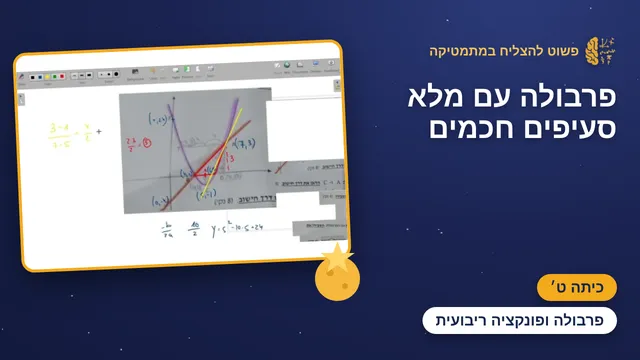
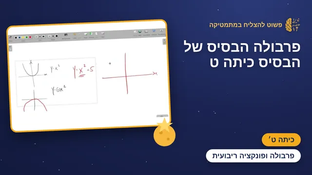
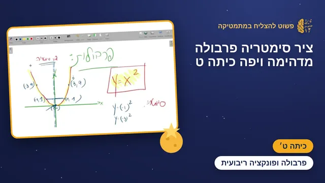
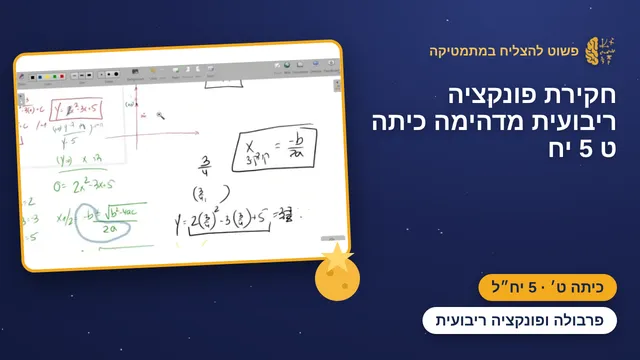
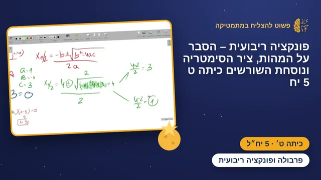
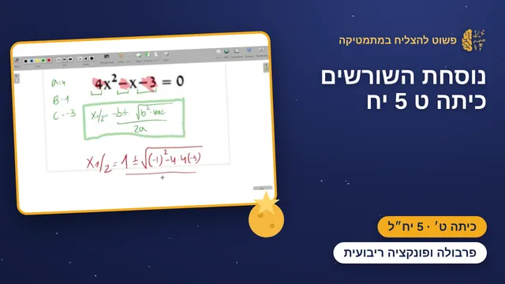

פשוט להצליח במתמטיקה › כל הנושאים › פרבולה ופונקציה ריבועית
פרבולה ופונקציה ריבועית – סרטוני הסבר ותרגול
17 סרטוני הסבר ותרגול בנושא פרבולה ופונקציה ריבועית – לכיתה ט׳, שאלון 571. כל נושא מוסבר מהקל אל הקשה: קודם הרעיון, אחר כך תרגילים, ובסוף שאלות בסגנון בגרות. הכול בחינם, בשיטת "פשוט להצליח".
רוצים לעקוב אחרי ההתקדמות?נרשמים בחינם, וכל סרטון שראיתם מסומן ✓. ממשיכים מכל מכשיר.
הצטרפות בחינם ←פרבולה ופונקציה ריבועית – כיתה ט׳ כל הנושאים של כיתה ט׳ ←
 בעיה מילולית – משחקי ליגה, משוואה ריבועית xx−1=120
בעיה מילולית – משחקי ליגה, משוואה ריבועית xx−1=120 פרבולות עם משוואת ישר וסעיפים חכמים
פרבולות עם משוואת ישר וסעיפים חכמים
פרבולה עם מלא סעיפים חכמים פרבולה מתוקה
פרבולה מתוקה פרבולה חכמה כיתה ט
פרבולה חכמה כיתה ט פרבולות עם משוואת ישר ושיפוע כיתה ט המטורפים
פרבולות עם משוואת ישר ושיפוע כיתה ט המטורפים
פרבולה הבסיס של הבסיס כיתה ט
ציר סימטריה פרבולה מדהימה ויפה כיתה טפרבולה כיתה ט נדיר ומדהיםחקירה מלאה פונקציה ריבועית
חקירת פונקציה ריבועית מדהימה כיתה ט 5 יח
פונקציה ריבועית – הסבר על המהות, ציר הסימטריה ונוסחת השורשים כיתה ט 5 יח
נוסחת השורשים כיתה ט 5 יח פרבולות – משמעות כולל יצירת קו ישר כיתה ט
פרבולות – משמעות כולל יצירת קו ישר כיתה ט הרעיון של פרבולה כולל ציר סימטריה כיתה ט
הרעיון של פרבולה כולל ציר סימטריה כיתה ט פונקציה זוגית והבנה של נקודה על הפונקציה כיתה ט-יתרגיל פרבולה עם קו ישר וישר המאונך לו – פתרון מלא
פונקציה זוגית והבנה של נקודה על הפונקציה כיתה ט-יתרגיל פרבולה עם קו ישר וישר המאונך לו – פתרון מלא